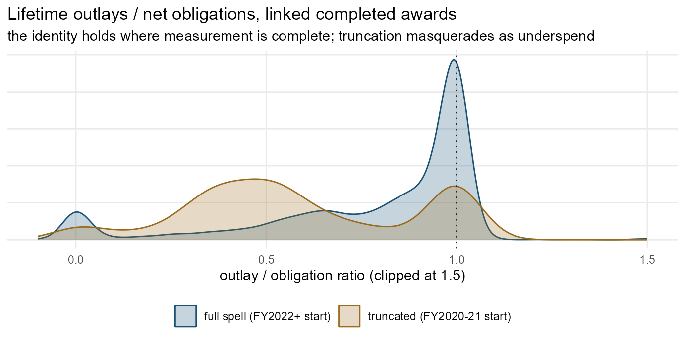
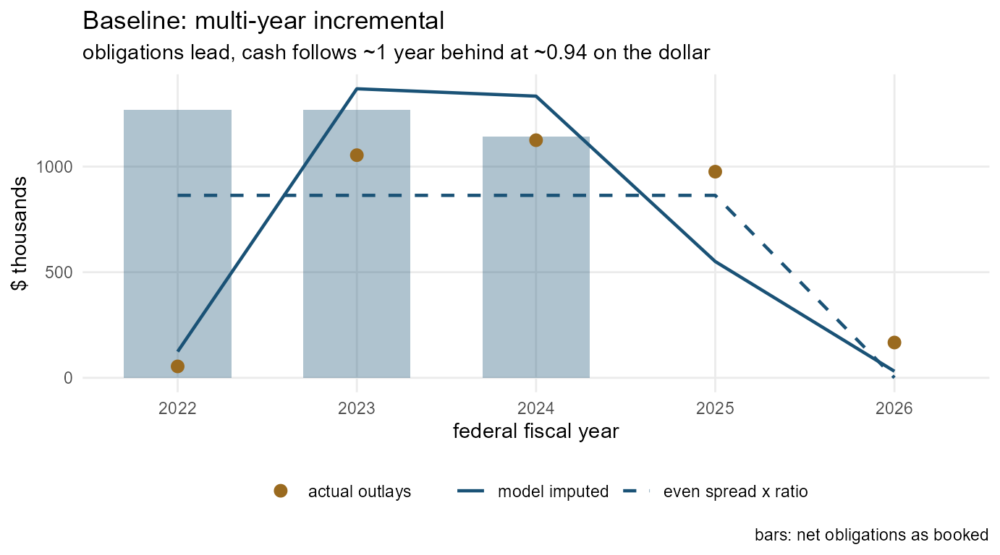
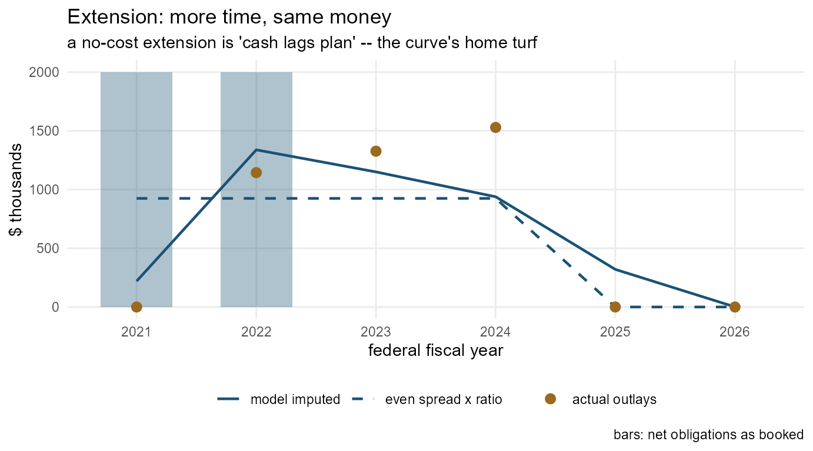
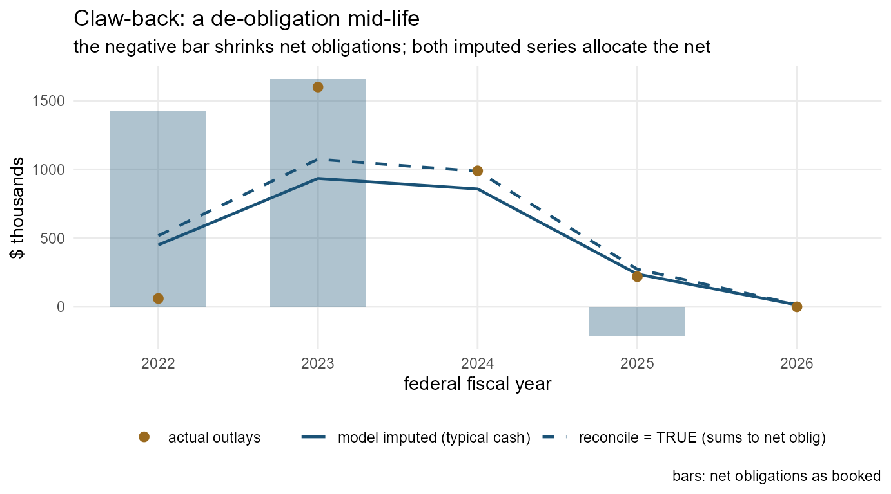

Imputing outlays: turning promises into a cash calendar
Source:vignettes/imputation.Rmd
imputation.RmdFederal award data reports obligations — the year money was promised. The cash — the outlay — arrives on its own schedule, and the two differ widely: measured on the package’s ground truth, obligations put a median 90% of an award’s dollars in its first fiscal year while cash puts 2% there, lags the commitment by roughly a year, and totals a median 94 cents per obligated dollar. Real annual outlays exist only in account-level File C data, complete only from the FY2022 monthly mandate and missing for whole agencies (vignette("data-model")). For everything else, this vignette’s tools impute a cash calendar from the obligations side.
Everything here runs offline on two bundled objects: outlay_training (1,184 awards whose File C cash story is fully trustworthy — the ground truth of the experiment documented in IMPUTATION.md) and outlay_model (the default model fitted on it).
library(usaspend)
library(data.table)
outlay_modelThe model: a liquidation curve
For each award-duration × start-timing cell, the model stores the mean share of an award’s net obligations outlaid in each event-year t (years since first obligation). One object carries all three measured regularities:
- the lag — the curve’s mass sits in years 1–2, not year 0;
-
the late-start shift — an award first obligated April–September pushes most of its first-year cash into the next fiscal year, so
late_startcells have flatter year-0 shares; - the outlay/obligation ratio — the curve’s sum is the cell’s liquidation ratio (globally 0.94), so imputed totals land at realistic cash levels, not at the obligation level.
outlay_model$curves_dur[dur_bin == 4]
#> Key: <dur_bin>
#> dur_bin t share n
#> <int> <int> <num> <int>
#> 1: 4 0 0.063772487 454
#> 2: 4 1 0.360364818 454
#> 3: 4 2 0.346694238 454
#> 4: 4 3 0.133250505 454
#> 5: 4 4 0.007561823 454Be precise about what the model returns. It is the typical payment schedule given the observed obligation schedule — a prediction of what cash usually does, in shape and in level — not an accounting identity. The zero-filled estimator makes the level exact by construction: each curve’s sum equals its cell’s mean observed lifetime ratio, so every model-imputed award totals (cell ratio × net obligations), never net obligations themselves. When an analysis needs the accounting identity instead — outlays that tie out exactly to the obligations ledger — reconcile = TRUE rescales each award’s series to sum to its net obligations (see below).
The scoring metric is the misallocation share — the fraction of an award’s dollars placed in the wrong fiscal year (us_misallocation(); IMPUTATION.md §3 explains why this beats correlation for an allocation task). Cross-validated on the ground truth, the model scores 0.28 mean / 0.22 median (timing) and 0.30 / 0.23 (level + timing) against 0.41/0.43 for even spread and 0.75/0.85 for booking cash in the commitment year.
The typical pattern, and the state of the real data
The accounting theory says outlays should equal obligations: money obligated is eventually either paid or de-obligated, so the two ledgers converge at closeout. The data agrees where measurement allows — awards with full reporting coverage and two-plus years to liquidate reach a median lifetime outlay/obligation ratio of exactly 1.00. The typical pattern the model banks on is therefore: year-one cash near zero, the mass arriving one to two years behind the commitments, converging toward the obligation total as the award closes out.
Published outlays diverge from the identity for reasons that are mostly measurement, and the fetch layer was built around them:
-
Reporting truncation. Account-level outlay reporting was mandated monthly only from FY2022 (COVID awards from April 2020; optional and quarterly before). Pre-mandate cash was never reported, not never paid — so
us_fetch_outlays()output is graded per award, and awards straddling the mandate are markedtruncated_pre_FY2022rather than letting missing years read as zero cash. -
Agency practice. Whole agencies publish obligations without outlays; coverage gaps become
no_file_c/no_outlay_rowsgrades, and unlinkable records becomeunlinked, withNAdollars — never fabricated zeros. - Liquidation in progress. Clean-era awards read 0.90 a year after the performance end, 1.00 only at three years; closeout de-obligations post later still.
The distribution makes the story visible. Among the training candidates that are linked and completed, the ratio for full-spell awards (first obligated FY2022+, whole cash history inside the mandate) piles up near 1; truncated awards (FY2020–21 starts, early cash unreported) smear across the low ratios:
#> Warning: package 'ggplot2' was built under R version 4.5.3
Two features of the shape are worth naming. The spike at exactly 0 is non-reporting agencies, not zero spending. And ratios above 1 are real: a de-obligation that posts after the cash already went out shrinks the denominator — the same mechanism that makes claw-back awards the hardest imputation class (drawn below).
Imputing
us_impute_outlays() takes any canonical transaction table and returns imputed dollars per award × fiscal year. It never returns NA dollars: awards outside the model’s support envelope — durations the training data cannot vouch for, missing period-of-performance dates — fall back to the basic rule global ratio × (net obligations / performance periods), and imputation_method says which rule produced each row.
tx <- us_normalize_transactions(us_sample_extract()$transactions)
imp <- us_impute_outlays(tx)
imp[, .(awards = uniqueN(award_key), dollars = round(sum(outlay_imputed))),
by = imputation_method]
#> imputation_method awards dollars
#> <char> <int> <num>
#> 1: none 6 0
#> 2: liquidation_curve 4 9702259
#> 3: even_spread 8 14874129With reconcile = TRUE, each award’s series is rescaled so imputed cash sums exactly to net obligations — the accounting identity most analyses of spending or revenue want, with the model contributing the timing (for an in-progress award the identity holds over its full projected life, not the partial window observed so far):
imp_r <- us_impute_outlays(tx, reconcile = TRUE)
merge(imp_r[, .(imputed = round(sum(outlay_imputed))), by = award_key],
us_outlay_features(tx)[, .(award_key, oblig = round(oblig))],
by = "award_key")[oblig > 0][1:5]
#> Key: <award_key>
#> award_key imputed oblig
#> <char> <num> <num>
#> 1: ASST_NON_HDTRA12310001_097 1300000 1300000
#> 2: CONT_AWD_73351023P0025_7300_-NONE-_-NONE- 62100 62100
#> 3: CONT_AWD_FA875018C0013_9700_-NONE-_-NONE- 7598606 7598606
#> 4: CONT_AWD_FA875019C0203_9700_-NONE-_-NONE- 5098414 5098414
#> 5: CONT_AWD_HHSD2002007200320001_7523_HHSD200200720032I_7523 281586 281586us_add_imputed_outlays() appends the same numbers to a fiscal panel as outlay_imputed, adding rows (flagged imputed_outlay_only_year) for years the curve allocates cash to but the panel has no activity row for — including future years of ongoing awards, which is the point.
p <- us_panel(us_sample_extract(), period = "fiscal")
#> Warning: No outbound subawards present -- pass-through cannot be netted out.
#> ℹ Bulk downloads match on the subawardee. Use `us_fetch_subawards_out()` to fetch
#> pass-through by prime award.
p <- us_add_imputed_outlays(p)
p$panel[, .(obligations = round(sum(obligation_net)),
imputed_cash = round(sum(outlay_imputed))), by = year][order(year)][1:8]
#> year obligations imputed_cash
#> <int> <num> <num>
#> 1: 2008 0 0
#> 2: 2009 17370 15824
#> 3: 2010 309991 42242
#> 4: 2011 405951 82928
#> 5: 2012 1846021 296209
#> 6: 2013 7086 296209
#> 7: 2014 320901 382201
#> 8: 2015 27370 366378Four cases, drawn
Each panel below shows the same three series for one real award: obligations as booked (bars), the model’s imputed outlays (solid line), and the naive even spread — average annual net obligation scaled by the global ratio (dashed). For the first three cases the award is in the ground truth, so the actual File C outlays (points) referee.
1. Baseline: a multi-year incremental award
The planned rhythm — obligations arrive as annual continuations, cash shadows them a year behind. The model’s curve reproduces both the lag and the sub-1.0 level; even spread gets the level roughly right but flattens the shape.

2. An extended award
The period of performance was pushed out past the original end date. The obligations stop but the cash keeps flowing through the extension — the liquidation curve’s tail covers exactly those trailing years, where the even spread (built on the final window) dilutes every year instead.

3. A claw-back (reduced award)
De-obligations claw money back — the negative bar. In the accounting, the claw-back reduces net obligations, so both the model and the reconcile = TRUE series allocate the smaller net figure, never the gross that was briefly on the books. This is the hardest class for every method: the cash that flowed before the claw-back tracked the original plan, and a ratio above 1 is even possible when the de-obligation posts after the money went out. The honest read is the imputation plus a wider error bar, which is why us_outlay_features() flags mod_class == "reduced".

What to remember
- Imputed outlays are a modelled cash calendar, good to roughly a fifth to a quarter of dollars misallocated on trustworthy ground truth. Where real File C outlays exist (
us_add_outlays(), coverage graded), prefer them; imputation is for everywhere they don’t. - Default output is the typical payment schedule (level ≈ 0.94 of net obligations, what completed awards actually deliver);
reconcile = TRUEimposes the accounting identity (imputed cash sums exactly to net obligations) — the right configuration when the dollars must tie out to the obligations ledger. -
imputation_methodandimputation_flagstravel with every number — report them. Areducedaward deserves a wider error bar; aneven_spreadrow means the model declined to guess beyond its support. - Fitting your own model on your own ground truth is a few lines:
vignette("imputation-fitting").